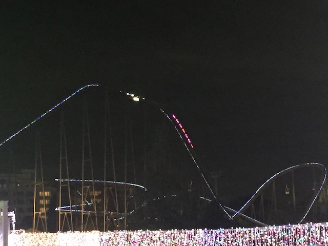
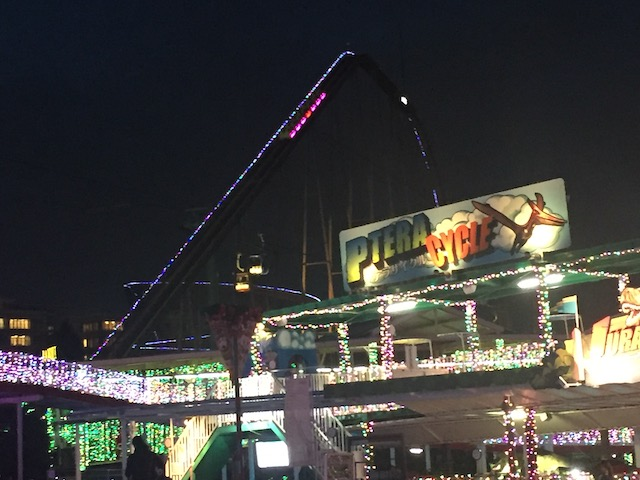
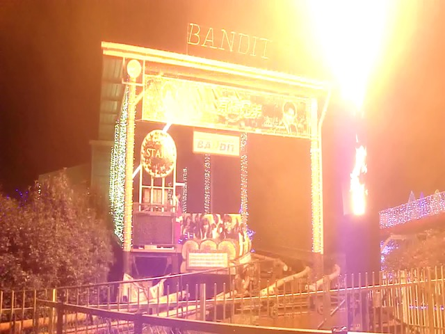
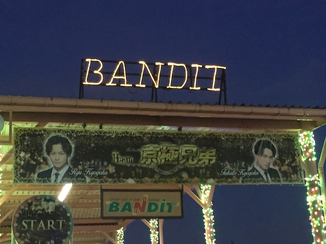
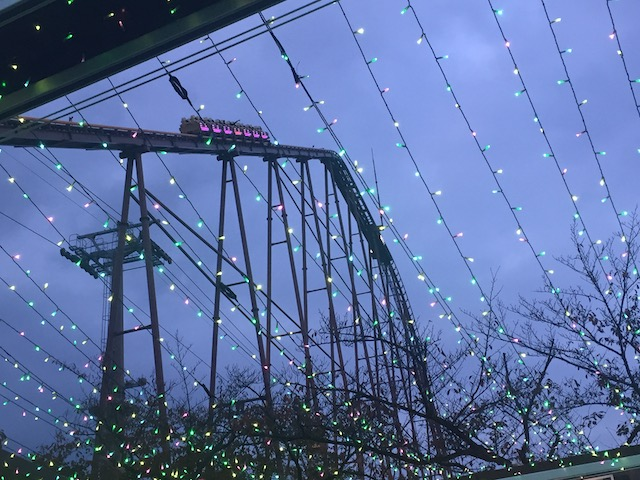
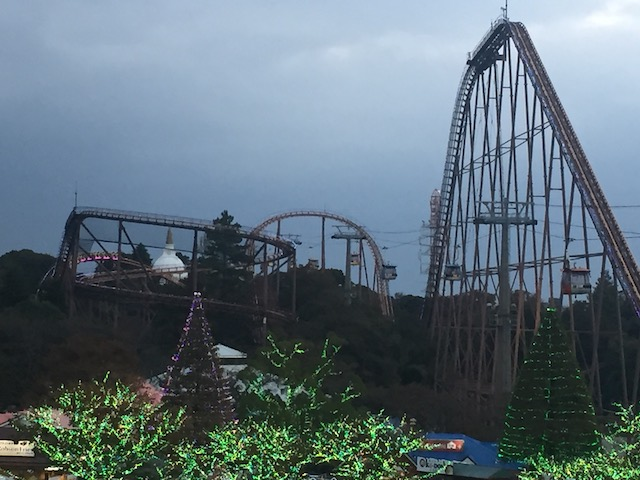
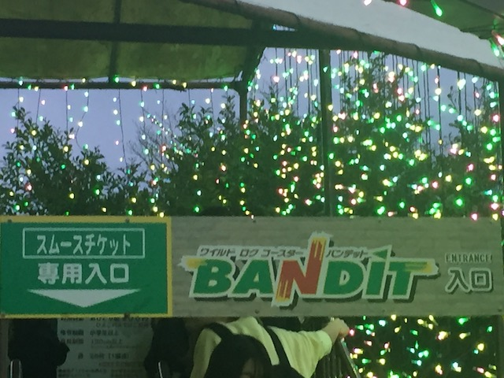
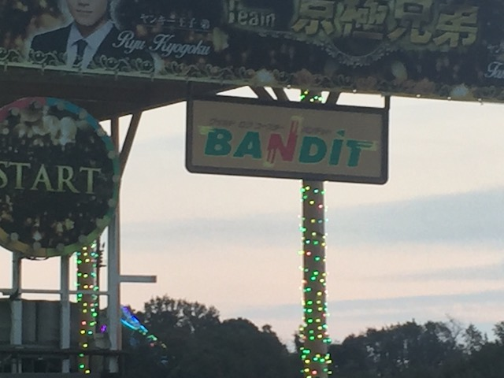

| |
Bandit Review

We're here at Yomiuriland where we're going to be riding their biggest ride (but not their star attraction). Yep. We're reviewing Bandit today. This is the parks....Mini-Hyper I guess. Yeah. I know some people call it a Hyper Coaster. And....you can semi-see their point when you know that some people count Steel Eel and even the Mega-Lites as Hyper Coasters, then it'd only be fair to count Bandit. But....NOPE!!! Though to be fair, I don't really count the Mega-Lites either. But yeah. Bandit may not be a hyper coaster, but it's still a really fun ride. And yeah. We go through the line, hop in the cars, pull down the OTSRs (They aren't necesarry on this ride. But....Japanese coasters frequently have unnecesarry OTSRs. And the ride's not rough, so it's not a big deal). And we're off! We roll around a turn and.....FIRE!!! Yeah. This ride has fire (at least it did when I rode it during the Illuminations). It adds a nice little touch to the ride, which....I like that. But yeah. We begin climbing up the lifthill. It's pretty big, and you get a really nice view of not just Yomiuriland, but the surrounding area of Tokyo. Hell, when you reach the top, it has a little bit of straight track, solely there for you to look around. Yeah. It pulls the B&M Dive Machine trick where it stops right at the edge of the drop before dropping. I like it on the B&M Dive Machines, but its kind of awkward here. Hell, even on HangTime, I'm not a fan of the stop. But at least that's pretending to be a B&M Dive Machine. This is just Yomiuriland saying "The view from Bandit is nice. Take a second to savor it". A very Japanese thing to do. Anyways, we finally go down the first drop. It's not a huge first drop, but it's still fairly big and gives you a lot of speed. We then head up a hill and around a turnaround. Not too much going on here, just cruising and having fun. Drop back down, and then begin to helix on up. Sure, the helix itself is nothing particuarly unique or special, but it does provide some decent forces. We then head down another small drop, nice little pop of airtime there, and then rise up another hill, go around another turn, and drop down again. We head through a small little airtime hill, that sure enough, has a nice little pop of airtime. Nothing extreme, but that's a good airtime hill right there. We head through another turn and down a bigger drop. I'm really starting to have fun on this ride. We then head up a much bigger hill, and unfortunately, this seems much more about killing our speed. And sure enough, we go around a turn, and through a midcourse brake. Aww. =( Well, at least it's mild and more like just a trim. Back down another drop and gain more speed! YAY!!! We head into another airtime hill, except this time, there's no airtime. Lame. We head up another hill, go around a turn, head up a hill and into the brake run. Aww. It's already over. So yeah. Bandit is not amazing or anything, but for what it is, it's a fun ride. It's got some speed and a couple pops of airtime. Sure, I wouldn't go out of my way to travel for this ride. And it's not even the best ride at Yomiuriland (I know a lot of people disagree with me, but I stand by it). But it's still a very fun ride, and definetly worth a ride or two if you find yourself at Yomiuriland.
7/10
Location: Yomiuriland
Opened: 1988
Built by: Togo
Last Ridden: November 8, 2018
Bandit Photos








Home
|